American bully

caracteristique physique
L’American Bully est un chien de taille moyenne au corps musclé, athlétique, charpenté et puissant Taille : 33 cm à 57 cm (selon la catégorie)
origine et histoire
caractere
sante
prix
1000 euroberger allemand

caracteristique physique
Impossible de ne pas reconnaître le berger allemand au premier coup d’œil avec son corps puissant et musclé de taille moyenne, son museau noir, ses oreille dressées et sa queue touffue.
origine et histoire
L'élevage méthodique du berger allemand a débuté dès 1899 avec la fondation de la Société du Chien de Berger Allemand (Verein für Deutsche Schäferhunde), sous l’impulsion de Max Emil Frédéric von Stephanitz, considéré comme le « père » de la race du berger allemand. La race telle qu'on la connait aujourd'hui est issue de croisements entre différentes races de chiens de troupeaux présents dans les régions de Wurtemberg et de Bavière, dans le sud de l’Allemagne. L'objectif affiché par la Société étant de créer un chien de travail capable de remplir les tâches les plus exigeantes. Les premiers bergers allemands arrivent en France à partir de 1910 et se taillent rapidement une solide réputation qui tient aussi au fait que ce chien, appelé alors berger d’mAlsace, était considéré comme une race française volée par l’Allemagne lors de la guerre de 1870.
caractere
berger australien

berger de caucase

berger malinois

bouledogue americain

bouledogue anglais

bouledogue francais

braque francais

braque allemand

bull terrier

cane corso

caniche bichon

caniche
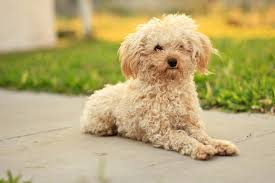carlin
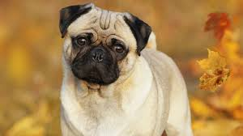chihuahua
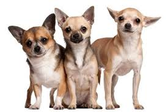chow chow

dalmatien
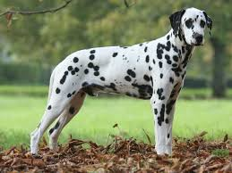dobermann
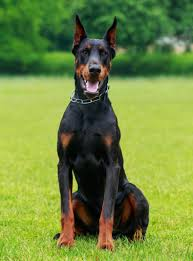dogo argentino

dogue allemand

epagneul breton

golden retriver

husky
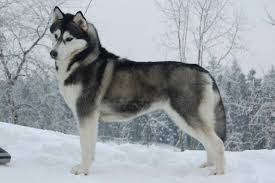jack russel

kangal

labrador
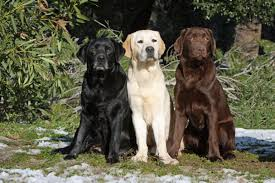malamute d'alaska
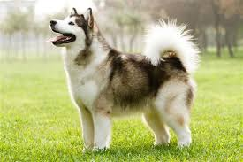pitbull
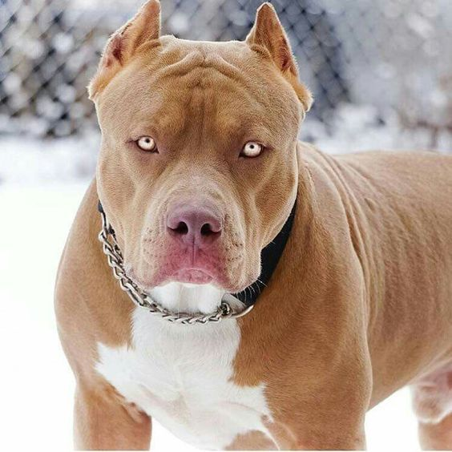pointer
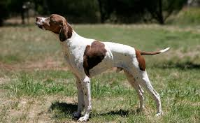rottweiler
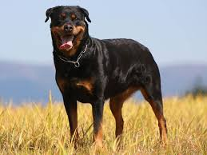saint bernard

shih tzu

spitz nain